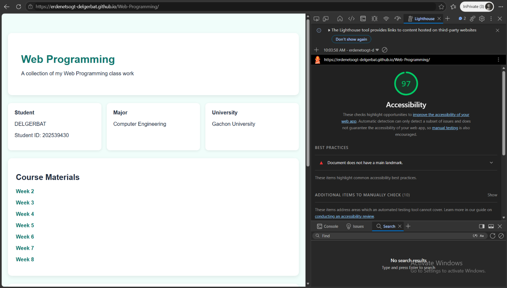
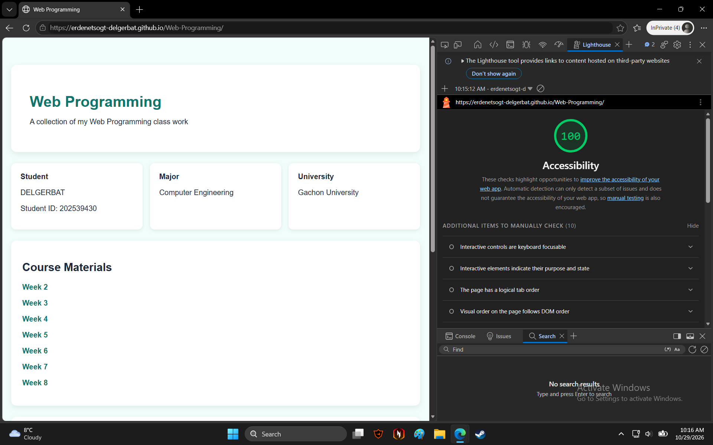

1. Before Fix
Accessibility Score: 97/100
Problem: The document did not have a main landmark. This made it harder for assistive technology users to identify the main content of the page.

2. What I Changed
I added a main element around the primary content of my website. This gives the page a clear main landmark.
Before:
<div class="info">
...
</div>
<section class="materials">
...
</section>After:
<main>
<div class="info">
...
</div>
<section class="materials">
...
</section>
</main>I also reviewed the page's accessibility and checked the updated result using Lighthouse.
3. After Fix
Accessibility Score: 100/100
The updated Lighthouse audit showed a score of 100. The missing main landmark warning was no longer reported.

4. Result
The accessibility score improved from 97 to 100. Adding the main landmark helped make the page structure clearer for assistive technologies.